Créer l'espace de votre organisation
Chaque organisation travaille dans son propre espace, avec sa propre base de données. Tout le monde se connecte à la même adresse : c'est votre compte qui ouvre l'espace de votre organisation.
- Ouvrez la page Créer mon espace.
- Renseignez l'organisation, la personne de contact, son adresse courriel et un mot de passe : ce seront les accès de l'administrateur.
- Choisissez votre offre (Standard 25 Go, Standard 50 Go, Standard ou Partenariat).
- Expertise-ID active l'espace : sa base et votre compte administrateur sont créés, et vous êtes prévenu par courriel.
Se connecter
Ouvrez la page de connexion de la plateforme, puis :
- saisissez votre adresse courriel et votre mot de passe ;
- un code à 6 chiffres vous est envoyé par courriel : saisissez-le. Il est valable 10 minutes, pour une seule connexion.
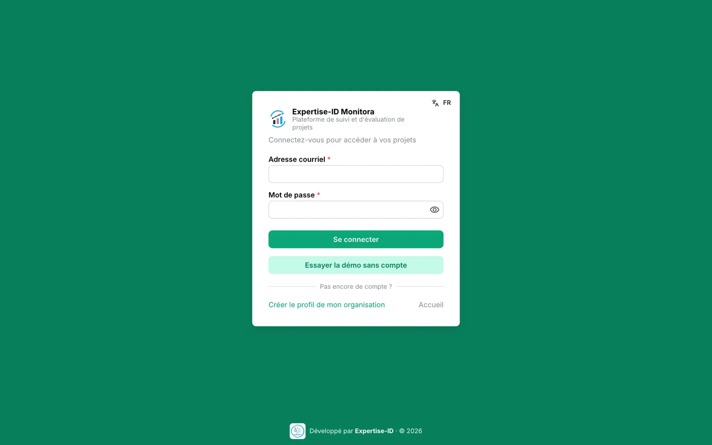
Se repérer dans l'écran
- À gauche, le menu : les modules (tableau de bord, projets, indicateurs, suivi, bénéficiaires, cartographie, documents, plaintes…). La Corbeille est en bas des modules ; les pages d'administration suivent pour l'administrateur.
- En haut : le logo de votre organisation, la langue, les notifications et votre compte.
- « ← Retour » en haut de chaque page ramène à la page précédente.
- Le bouton Éditer des listes fait apparaître les actions de modification et de suppression.
Le tableau de bord
La première page après la connexion. Tous les chiffres suivent les filtres du haut : période (toutes, une année, une plage de dates) et statut des projets.

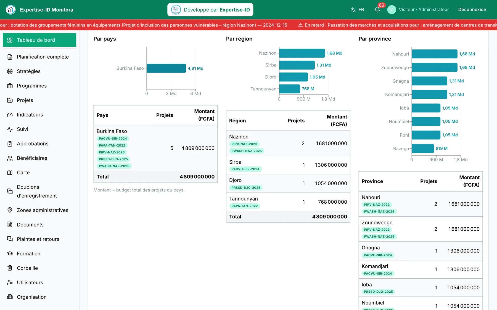
Personnaliser et partager
- Personnaliser : choisir les blocs affichés et leur ordre.
- Partager : créer un lien en lecture seule, par exemple pour un bailleur, sans lui créer de compte.
Stratégie, programmes et projets
Le plan stratégique de l'organisation et les politiques nationales auxquelles vos projets contribuent, organisés en chaîne : Stratégie → Programme → Projet. Chaque document a ses axes, objectifs et résultats, à autant de niveaux que nécessaire.
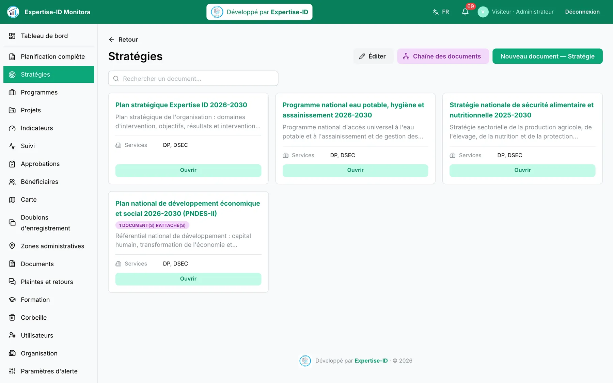
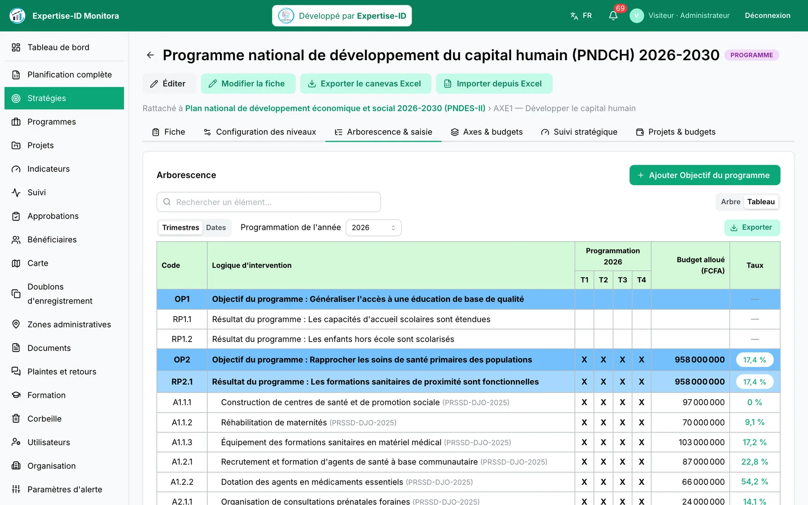
Chaque projet se rattache à un élément d'un programme ou d'une stratégie : ses résultats remontent alors jusqu'aux objectifs stratégiques.
Importer depuis Excel
Menu Planification complète : téléchargez le modèle Excel, remplissez-le, importez-le. Un seul classeur peut contenir le cadre stratégique, la structure, le projet, sa planification, ses indicateurs et ses bénéficiaires ; seule la feuille « Projet » est obligatoire.
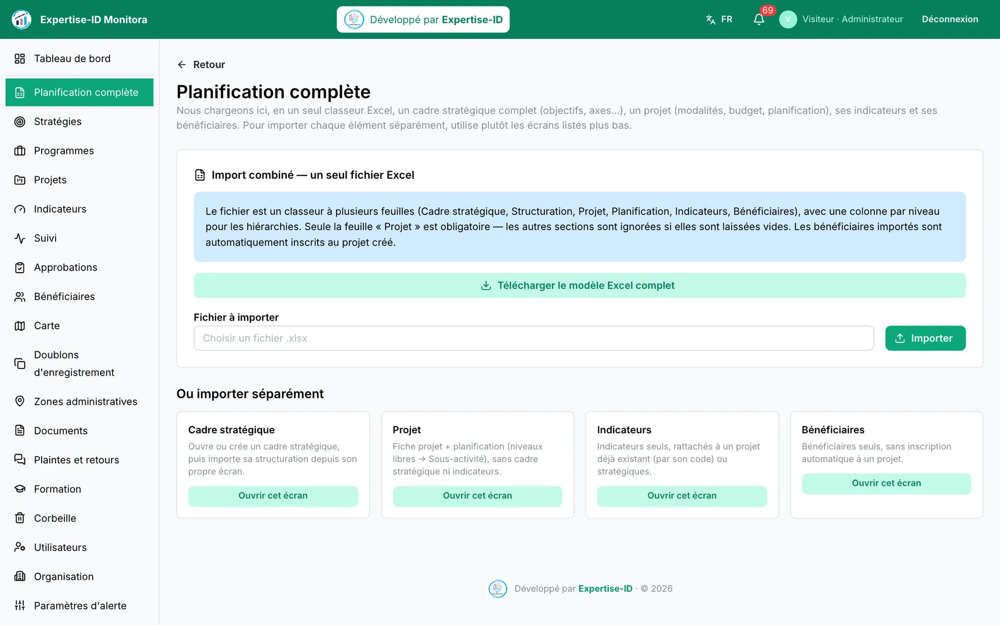
La liste des projets
En haut, des compteurs par statut (en cours, en préparation, clôturés) qui servent aussi de filtres. Chaque ligne montre la période et la part de temps écoulée, le budget et le chef de projet ; un clic ouvre le projet.
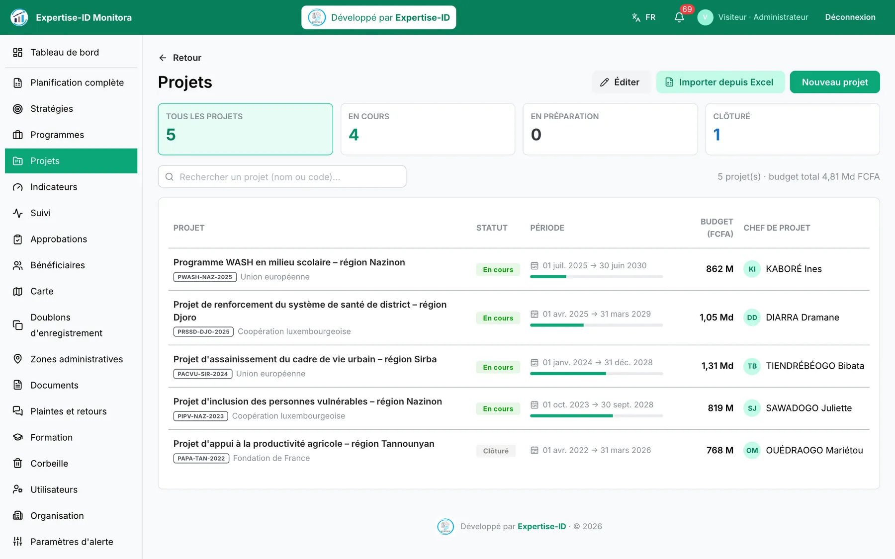
Créer un projet : Nouveau projet (nom, code, dates, pays et zones, bailleur, partenaires, rattachement stratégique, budget).
La planification d'un projet
La fiche du projet s'ouvre sur l'onglet Planification. Les niveaux sont libres : nommez-les comme dans votre document de projet (effets, extrants, activités, sous-activités…).

- Configuration des niveaux : nommer et ordonner les niveaux du projet.
- Planification par période : programmer les quantités et les budgets année par année, trimestre par trimestre.
- Vue Arbre ou Tableau, export, import depuis Excel.
Le cadre logique et les risques
Onglet Cadre logique : il se construit tout seul à partir de la planification et des indicateurs. Pour chaque niveau : la logique d'intervention, les indicateurs (référence, cible, réalisé), les sources de vérification et les hypothèses.
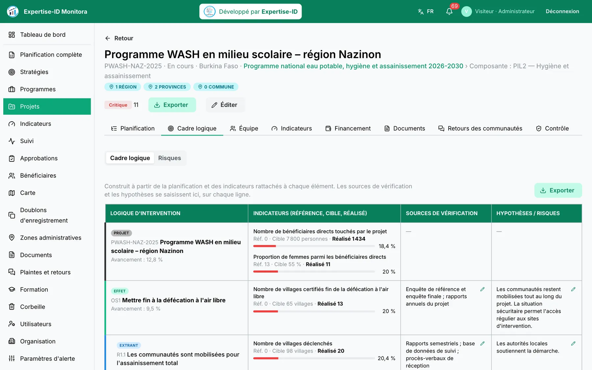
Le sous-onglet Risques liste les risques du projet, leur probabilité, leur impact et les mesures prévues.
Équipe, partenaires et financement
Onglet Équipe : les personnes affectées au projet, et à quelle partie de la planification ; sous-onglet Partenaires : bailleurs, partenaires de mise en œuvre et de consortium.
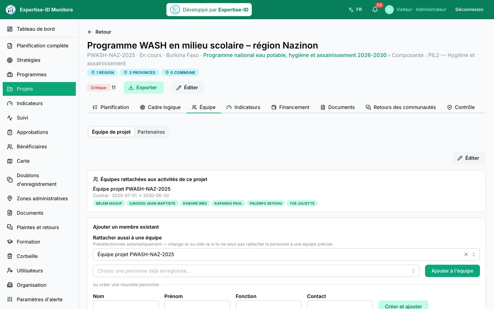
Onglet Financement : coût total, fonds propres et financement de chaque bailleur, avec les rallonges.
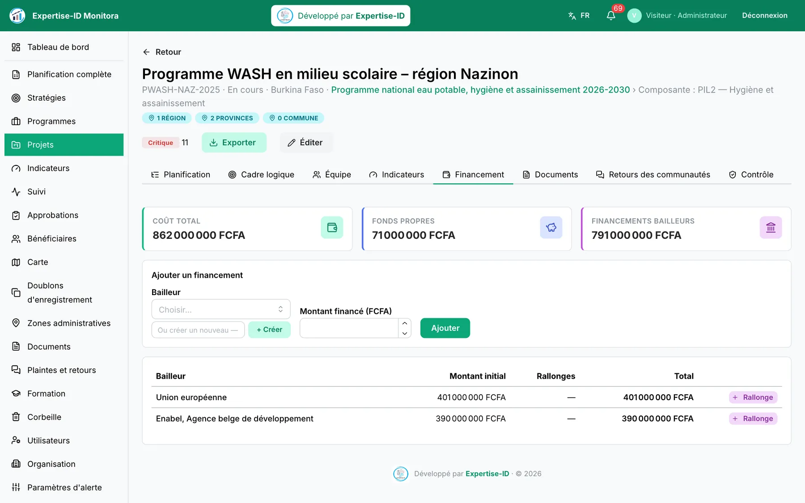
Les indicateurs
Menu Indicateurs : tous les indicateurs, regroupés par projet. Les compteurs du haut donnent le nombre d'indicateurs par état (conforme, à risque, critique) et servent de filtres.

La fiche d'un indicateur donne ses cibles par période et l'historique des valeurs saisies, avec leurs pièces justificatives.
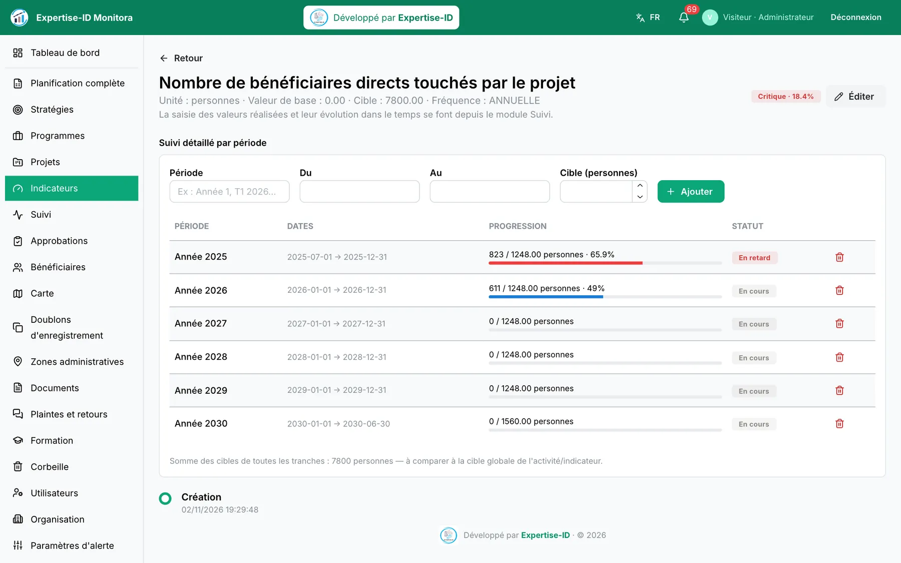
Le suivi et les approbations
Menu Suivi : choisissez un projet pour saisir le réalisé (quantités, dépenses) et suivre son évolution dans le temps.
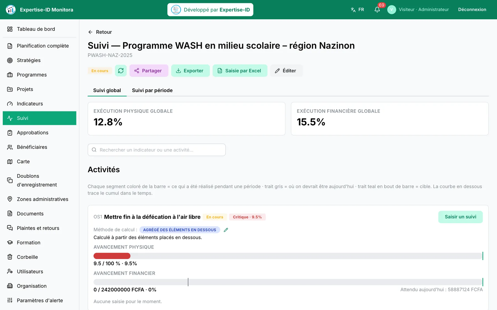
- Périodes de saisie : l'administrateur ouvre ou ferme la saisie par période de rapportage.
- Approbations : si le projet le prévoit, les réalisations et les changements de planification attendent d'être approuvés (menu Approbations).
- Les retards et les échéances proches déclenchent des notifications.
Les bénéficiaires
Menu Bénéficiaires : le registre, projet par projet. Chaque personne a un identifiant unique ; un clic ouvre sa fiche.
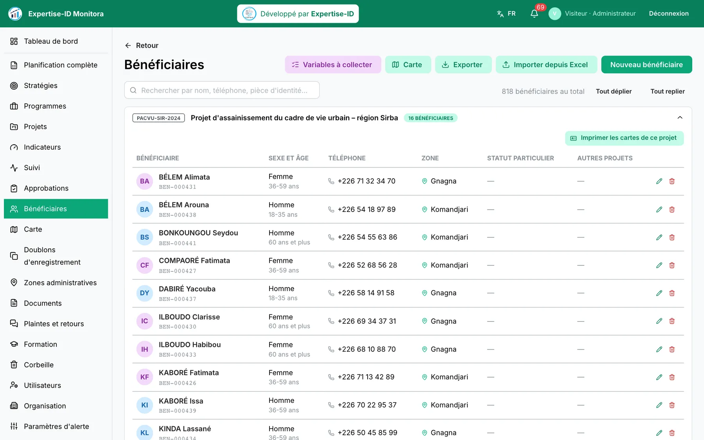
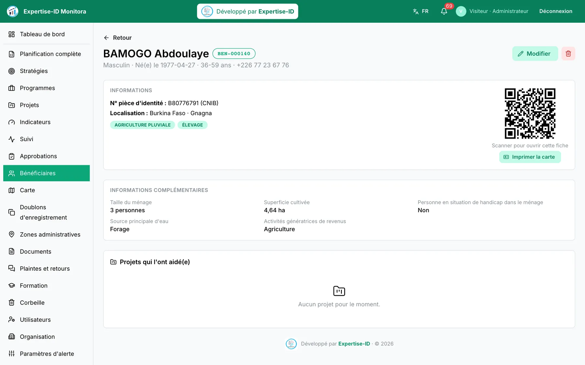
- Variables à collecter : l'administrateur choisit les informations demandées.
- Importer depuis Excel, Exporter, impression des cartes de bénéficiaire.
- Menu Doublons d'enregistrement : les personnes enregistrées deux fois sont signalées.
La cartographie
Menu Cartographie : bénéficiaires et projets placés sur les zones administratives (régions, provinces, communes). Les cercles montrent où se trouvent les bénéficiaires ; un clic affiche le détail.
- Filtrer : période (toutes, une année, une plage de dates), statut des projets, un projet ou une zone précise. Les compteurs au-dessus de la carte (bénéficiaires, positionnés par GPS, placés selon leur localité, sans localisation) suivent les filtres.
- Couches : bénéficiaires, régions, provinces, routes, villes et villages, noms… à afficher ou masquer. Importer une couche ajoute vos propres données (Shapefile en archive .zip, GeoPackage, GeoJSON ou KML).
- Par zone : colore les régions, provinces ou communes selon un ou plusieurs indicateurs (nombre de projets, bénéficiaires, budget, dépenses, taux d'exécution physique ou financière…).
- Fond : neutre, OpenStreetMap, satellite ou aucun.
- Télécharger la carte : en PDF ou en image PNG, avec titre, format de papier et orientation, prête à insérer dans un rapport.

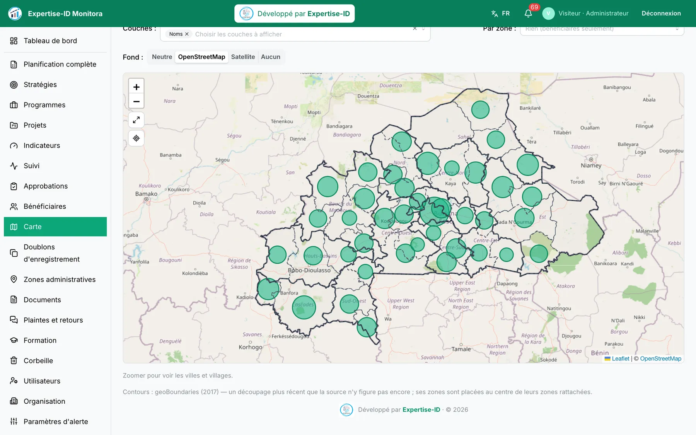
Les documents et la corbeille
Chaque projet a ses documents (onglet Documents) ; le menu Documents donne la bibliothèque libre, sans projet. Ils se rangent en dossiers, comme sur un ordinateur, en grille ou en liste.

- Versions : un document garde toutes ses versions.
- Sélection multiple : cochez des éléments (ou « Tout sélectionner ») pour les télécharger en zip ou les supprimer.
- Corbeille (en bas du menu) : ce qui est supprimé y reste 30 jours ; on peut le restaurer ou le supprimer définitivement. Après 30 jours, il est effacé automatiquement.
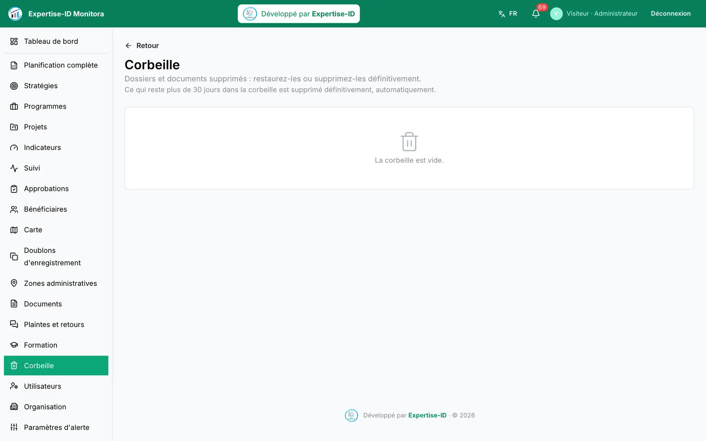
Les plaintes et retours
Le mécanisme de gestion des plaintes recueille les plaintes, avis et suggestions des communautés, et les suit jusqu'à la réponse au plaignant.
Recevoir
- Formulaire public en ligne, accessible sans compte, aussi par QR code (un par projet).
- Saisie par l'équipe : Enregistrer un retour (téléphone, visite, réunion…).
- Le plaignant reçoit un numéro de suivi pour connaître l'avancement de sa demande.
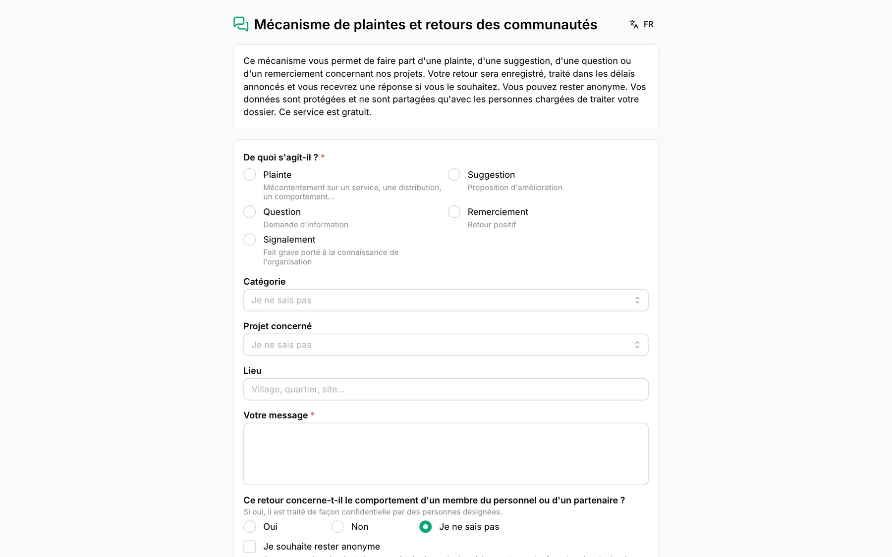
Suivre
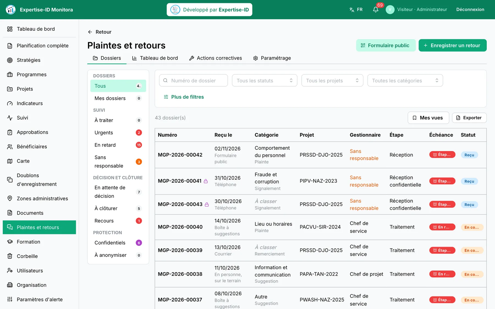

Dans chaque projet, l'onglet Retours des communautés donne les chiffres du projet (volume reçu, dossiers ouverts, traitement dans les délais…).
Traiter un dossier
La fiche d'un dossier réunit le récit, le plaignant, l'étape en cours, l'échéance et le journal de toutes les actions.
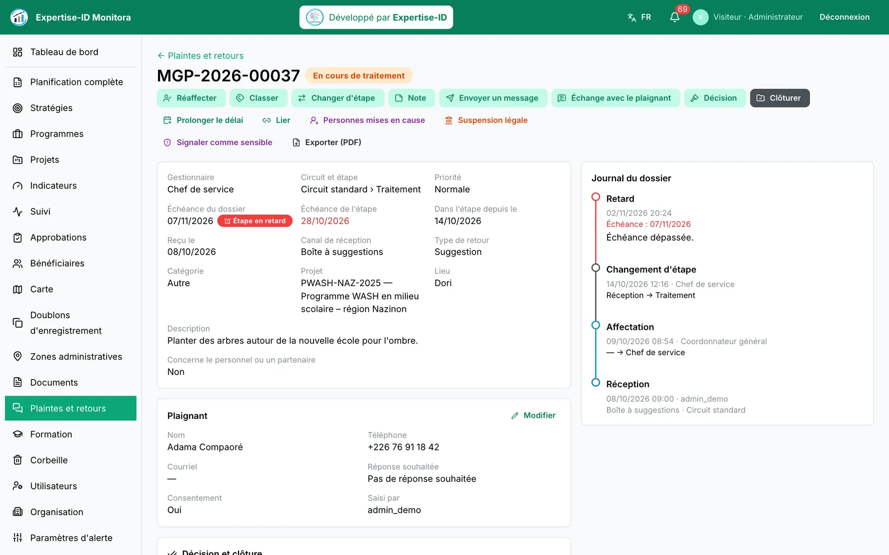
- Classer : catégorie et priorité.
- Affecter à un gestionnaire, qui reçoit une notification.
- Le gestionnaire fait avancer les étapes du circuit ; chaque étape a son délai.
- Décider et clôturer : motif, décision et retour au plaignant sont obligatoires.
Paramétrer le mécanisme
Plaintes et retours › Paramétrage (administrateur) :
- Mécanisme : activation, numérotation, délais par défaut, langues de réception.
- Types de retours, catégories, priorités.
- Circuits de traitement : les étapes, leurs délais et leurs responsables ; un circuit confidentiel pour les cas sensibles (exploitation et abus, fraude…), réservé à des personnes nommées et habilitées.
- Messages au plaignant, calendrier (jours fériés), habilitations, données personnelles, canevas Excel de paramétrage.
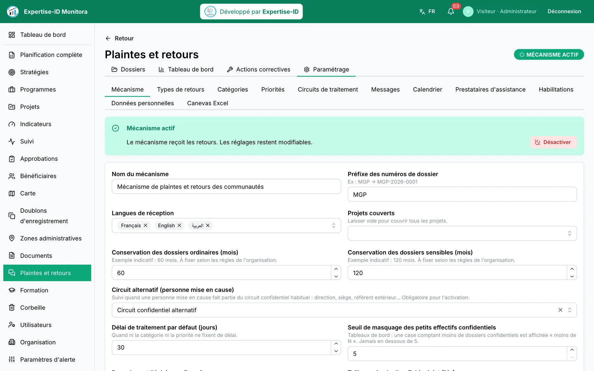
Utilisateurs et droits
Menu Utilisateurs (administrateur). Nouvel utilisateur : nom, adresse courriel (elle sert à se connecter et à recevoir le code ; une adresse ne peut appartenir qu'à un seul compte), rôle, niveau d'accès, mot de passe.
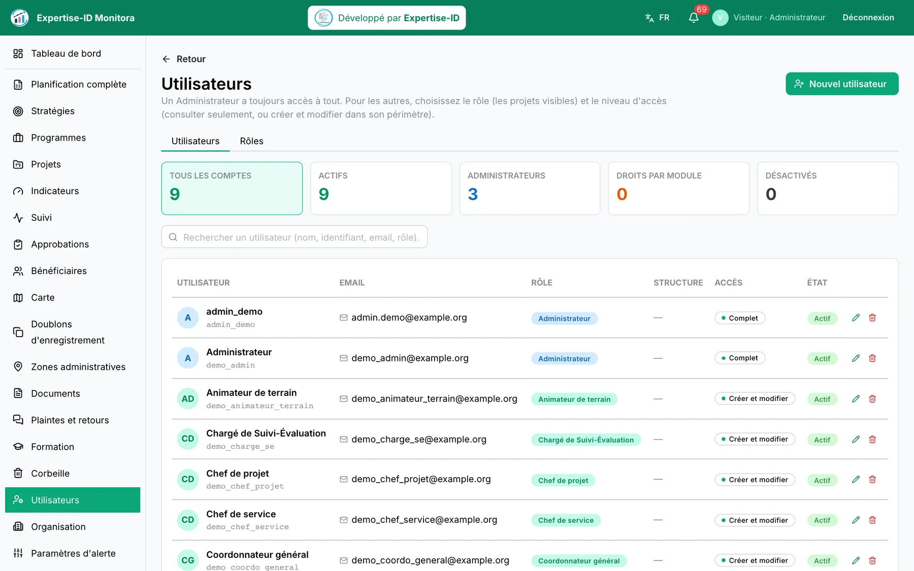
- Rôle : ce que la personne voit (tous les projets, ou ceux auxquels elle est affectée). Les rôles se créent et se renomment dans l'onglet Rôles.
- Niveau d'accès : consulter seulement, ou créer et modifier.
- Droits par module : masquer un module, ou le mettre en consultation seule, utilisateur par utilisateur.
- L'Administrateur a toujours accès à tout.
Personnaliser la plateforme
- Logo et nom : Organisation › Identité et logo. Le logo s'affiche en haut de toutes les pages et sur la page de connexion. Tant qu'il n'y en a pas, l'administrateur voit un bouton « Ajouter le logo de votre organisation » en haut.
- Menu : Personnaliser le menu (en bas du menu) pour renommer les rubriques, changer leurs icônes et adapter le vocabulaire (projet, activité…).
- Langues : chaque utilisateur choisit la sienne (français, anglais, arabe, espagnol, allemand, italien).
- Organisation : structure interne, parties prenantes, partenaires.
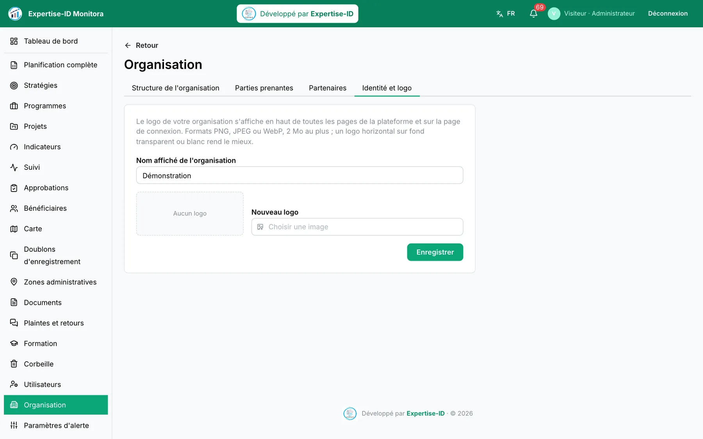
Sécurité et données
- Une base de données par organisation : vos données ne sont jamais mélangées avec celles d'une autre.
- Code par courriel à chaque connexion, en plus du mot de passe.
- Chiffrement des récits et coordonnées des plaignants.
- Fichiers protégés : les documents ne sont accessibles que par des liens temporaires, après contrôle des droits.
- Journal d'audit (administrateur) : connexions, consultations sensibles, exports et changements de droits, sans modification possible.
Questions fréquentes
Je ne reçois pas le code de connexion
Vérifiez les courriers indésirables, puis « Renvoyer le code » (une minute d'attente entre deux envois). Si votre compte n'a pas d'adresse courriel valide, demandez à votre administrateur de la renseigner dans Utilisateurs.
J'ai supprimé un document par erreur
Ouvrez la Corbeille (en bas du menu) et cliquez sur « Restaurer » : il revient à sa place. Passé 30 jours, il est effacé définitivement.
Un collègue ne voit pas un projet
Son rôle ne lui donne peut-être accès qu'aux projets auxquels il est affecté : ajoutez-le à l'équipe du projet, ou changez son rôle dans Utilisateurs.
Comment montrer nos résultats à un bailleur ?
Depuis le tableau de bord, « Partager » crée un lien en lecture seule ; vous pouvez aussi exporter le cadre logique, les indicateurs ou le tableau de bord des plaintes.
Peut-on changer l'adresse courriel d'un compte ?
Oui : l'administrateur de votre organisation la modifie dans Utilisateurs. Une adresse ne peut appartenir qu'à un seul compte de la plateforme.